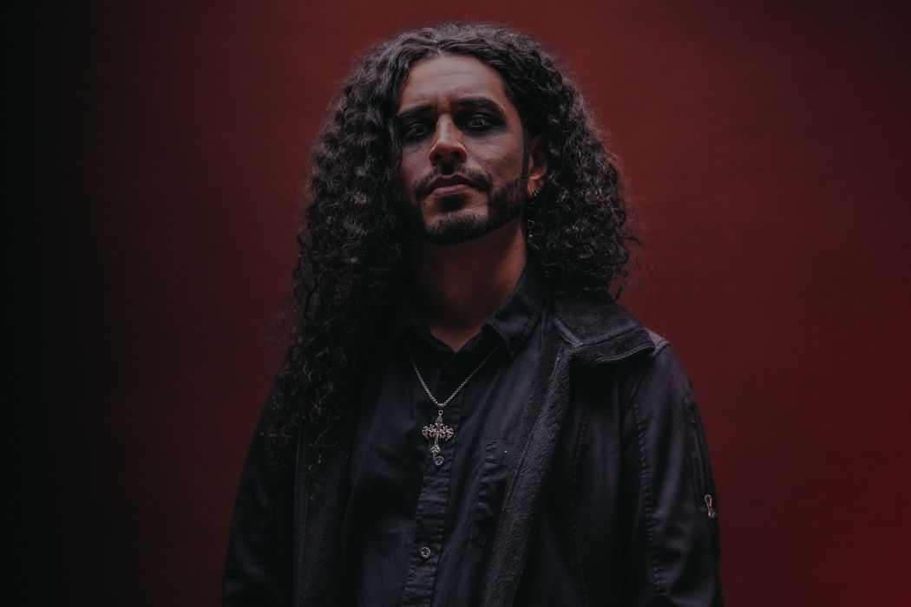
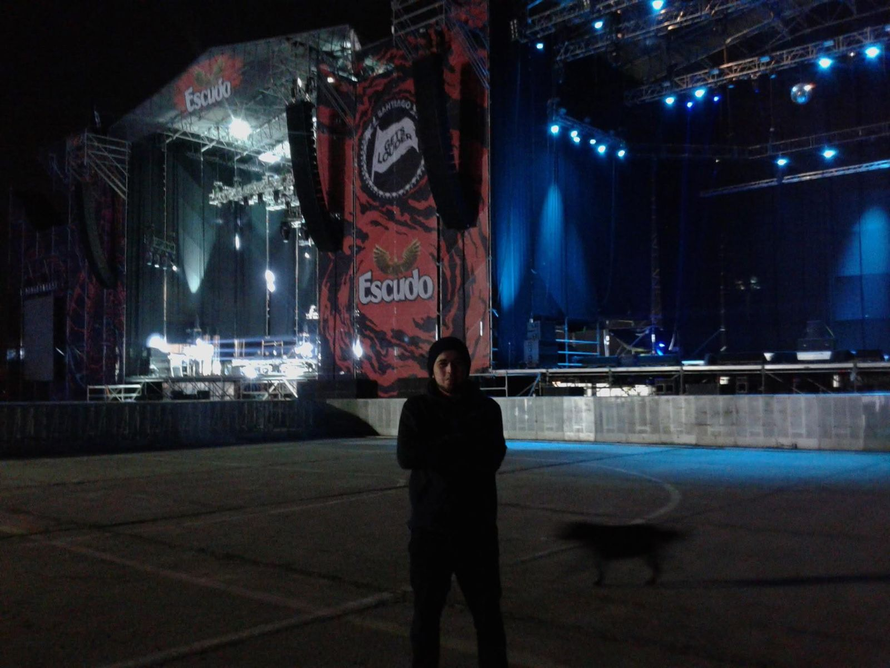
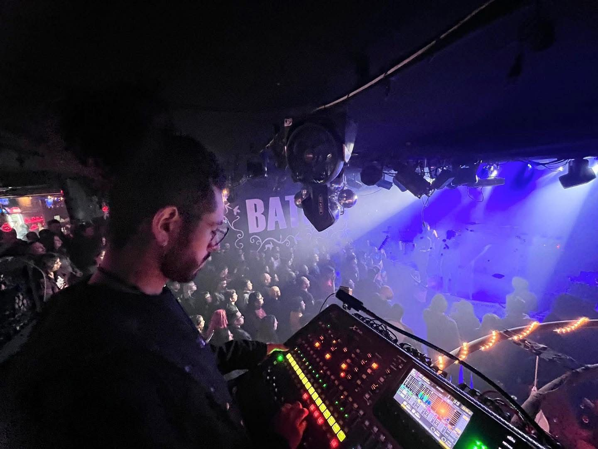
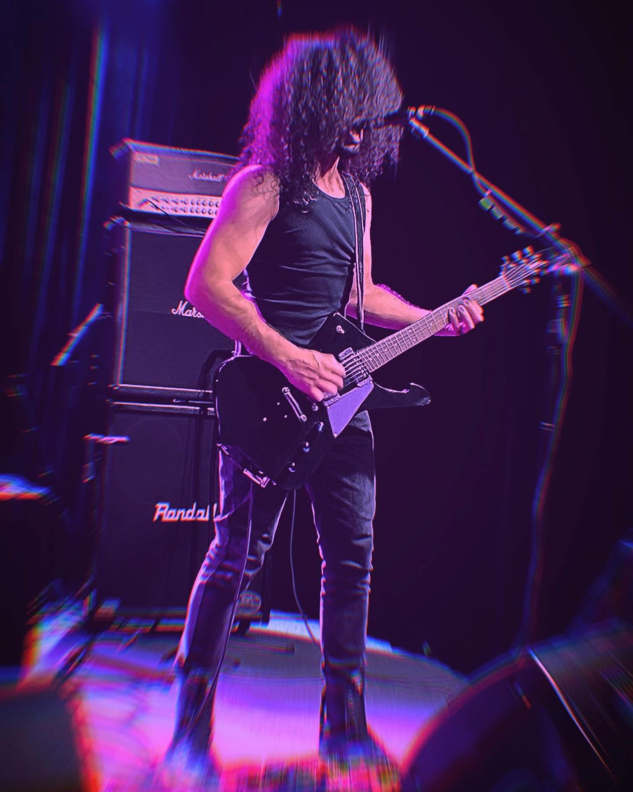
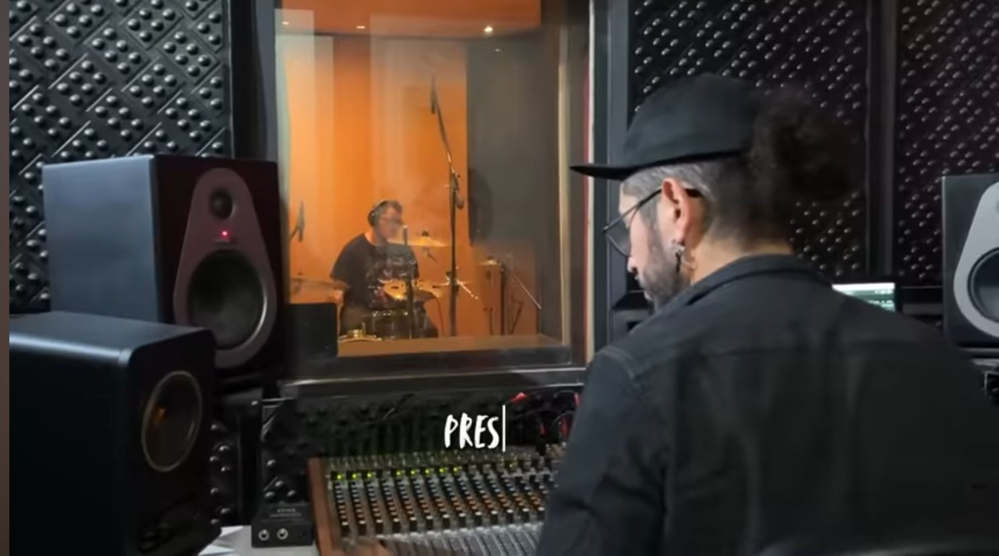

Apasionado por el sonido en Estudio de grabación, la composición musical y actualmente en el desarrollo web.
Grabación, Mezcla, Masterización, Refuerzo Sonoro
Cursando actualmente
FOH y Monitor en Salas Metrónomo, Club Chocolate, Teatro Coliseo, Espacio Diana.
Stage Hand en eventos masivos como Santiago Gets Louder.
Producción discográfica en Attic Records.
Participación en composición, grabación y presentaciones en vivo con la banda Maiale Vif.
Producción musical y presentaciones en vivo con la banda Trídöve.

Stage Hand en SGL 2015

FOH en Batuta

Presentación en Vivo con Maiale Vif

Producción Discográfica en Attic Records